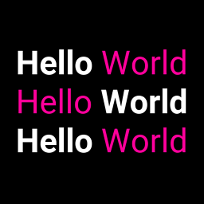
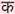

{kind=link}
Table Of Contents
Label¶
The Label widget is for rendering text. It supports ascii and unicode
strings:
# hello world text
l = Label(text='Hello world')
# unicode text; can only display glyphs that are available in the font
l = Label(text=u'Hello world ' + unichr(2764))
# multiline text
l = Label(text='Multi\nLine')
# size
l = Label(text='Hello world', font_size='20sp')
Sizing and text content¶
By default, the size of Label is not affected by text
content and the text is not affected by the size. In order to control
sizing, you must specify text_size to constrain the text
and/or bind size to texture_size to grow with
the text.
For example, this label’s size will be set to the text content
(plus padding):
Label:
size: self.texture_size
This label’s text will wrap at the specified width and be clipped to the height:
Label:
text_size: cm(6), cm(4)
Combine these concepts to create a Label that can grow vertically but wraps the text at a certain width:
Label:
text_size: root.width, None
size: self.texture_size
Text alignment and wrapping¶
The Label has halign and valign
properties to control the alignment of its text. However, by default the text
image (texture) is only just large enough to contain the
characters and is positioned in the center of the Label. The valign property
will have no effect and halign will only have an effect if your text has
newlines; a single line of text will appear to be centered even though halign
is set to left (by default).
In order for the alignment properties to take effect, set the
text_size, which specifies the size of the bounding box within
which text is aligned. For instance, the following code binds this size to the
size of the Label, so text will be aligned within the widget bounds. This
will also automatically wrap the text of the Label to remain within this area.
Label:
text_size: self.size
halign: 'right'
valign: 'middle'
Markup text¶
バージョン 1.1.0 で追加.
You can change the style of the text using Text Markup. The syntax is similar to the bbcode syntax but only the inline styling is allowed:
# hello world with world in bold
l = Label(text='Hello [b]World[/b]', markup=True)
# hello in red, world in blue
l = Label(text='[color=ff3333]Hello[/color][color=3333ff]World[/color]',
markup = True)
If you need to escape the markup from the current text, use
kivy.utils.escape_markup():
text = 'This is an important message [1]'
l = Label(text='[b]' + escape_markup(text) + '[/b]', markup=True)
The following tags are available:
[b][/b]- Activate bold text
[i][/i]- Activate italic text
[u][/u]- Underlined text
[s][/s]- Strikethrough text
[font=<str>][/font]- Change the font
[size=<integer>][/size]- Change the font size
[color=#<color>][/color]- Change the text color
[ref=<str>][/ref]- Add an interactive zone. The reference + bounding box inside the
reference will be available in
Label.refs [anchor=<str>]- Put an anchor in the text. You can get the position of your anchor within
the text with
Label.anchors [sub][/sub]- Display the text at a subscript position relative to the text before it.
[sup][/sup]- Display the text at a superscript position relative to the text before it.
If you want to render the markup text with a [ or ] or & character, you need to escape them. We created a simple syntax:
[ -> &bl;
] -> &br;
& -> &
Then you can write:
"[size=24]Hello &bl;World&bt;[/size]"
Interactive zone in text¶
バージョン 1.1.0 で追加.
You can now have definable “links” using text markup. The idea is to be able
to detect when the user clicks on part of the text and to react.
The tag [ref=xxx] is used for that.
In this example, we are creating a reference on the word “World”. When
this word is clicked, the function print_it will be called with the
name of the reference:
def print_it(instance, value):
print('User clicked on', value)
widget = Label(text='Hello [ref=world]World[/ref]', markup=True)
widget.bind(on_ref_press=print_it)
For prettier rendering, you could add a color for the reference. Replace the
text= in the previous example with:
'Hello [ref=world][color=0000ff]World[/color][/ref]'
Catering for Unicode languages¶
The font kivy uses does not contain all the characters required for displaying all languages. When you use the built-in widgets, this results in a block being drawn where you expect a character.
If you want to display such characters, you can chose a font that supports them and deploy it universally via kv:
<Label>:
font_name: '/<path>/<to>/<font>'
Note that this needs to be done before your widgets are loaded as kv rules are only applied at load time.
Usage example¶
The following example marks the anchors and references contained in a label:
from kivy.app import App
from kivy.uix.label import Label
from kivy.clock import Clock
from kivy.graphics import Color, Rectangle
class TestApp(App):
@staticmethod
def get_x(label, ref_x):
""" Return the x value of the ref/anchor relative to the canvas """
return label.center_x - label.texture_size[0] * 0.5 + ref_x
@staticmethod
def get_y(label, ref_y):
""" Return the y value of the ref/anchor relative to the canvas """
# Note the inversion of direction, as y values start at the top of
# the texture and increase downwards
return label.center_y + label.texture_size[1] * 0.5 - ref_y
def show_marks(self, label):
# Indicate the position of the anchors with a red top marker
for name, anc in label.anchors.items():
with label.canvas:
Color(1, 0, 0)
Rectangle(pos=(self.get_x(label, anc[0]),
self.get_y(label, anc[1])),
size=(3, 3))
# Draw a green surround around the refs. Note the sizes y inversion
for name, boxes in label.refs.items():
for box in boxes:
with label.canvas:
Color(0, 1, 0, 0.25)
Rectangle(pos=(self.get_x(label, box[0]),
self.get_y(label, box[1])),
size=(box[2] - box[0],
box[1] - box[3]))
def build(self):
label = Label(
text='[anchor=a]a\nChars [anchor=b]b\n[ref=myref]ref[/ref]',
markup=True)
Clock.schedule_once(lambda dt: self.show_marks(label), 1)
return label
TestApp().run()
-
class
kivy.uix.label.Label(**kwargs)[ソース]¶ ベースクラス:
kivy.uix.widget.WidgetLabel class, see module documentation for more information.
Events: - on_ref_press
Fired when the user clicks on a word referenced with a
[ref]tag in a text markup.
-
anchors¶ バージョン 1.1.0 で追加.
Position of all the
[anchor=xxx]markup in the text. These co-ordinates are relative to the top left corner of the text, with the y value increasing downwards. Anchors names should be unique and only the first occurrence of any duplicate anchors will be recorded.You can place anchors in your markup text as follows:
text = """ [anchor=title1][size=24]This is my Big title.[/size] [anchor=content]Hello world """
Then, all the
[anchor=]references will be removed and you’ll get all the anchor positions in this property (only after rendering):>>> widget = Label(text=text, markup=True) >>> widget.texture_update() >>> widget.anchors {"content": (20, 32), "title1": (20, 16)}
注釈
This works only with markup text. You need
markupset to True.
-
bold¶ Indicates use of the bold version of your font.
注釈
Depending of your font, the bold attribute may have no impact on your text rendering.
boldis aBooleanPropertyand defaults to False.
-
color¶ Text color, in the format (r, g, b, a).
coloris aListPropertyand defaults to [1, 1, 1, 1].
-
disabled_color¶ The color of the text when the widget is disabled, in the (r, g, b, a) format.
バージョン 1.8.0 で追加.
disabled_coloris aListPropertyand defaults to [1, 1, 1, .3].
-
disabled_outline_color¶ The color of the text outline when the widget is disabled, in the (r, g, b) format.
注釈
This feature requires the SDL2 text provider.
バージョン 1.10.0 で追加.
disabled_outline_coloris aListPropertyand defaults to [0, 0, 0].
-
ellipsis_options¶ Font options for the ellipsis string(‘...’) used to split the text.
Accepts a dict as option name with the value. Only applied when
markupis true and text is shortened. All font options which work forLabelwill work forellipsis_options. Defaults for the options not specified are taken from the surronding text.Label: text: 'Some very long line which will be cut' markup: True shorten: True ellipsis_options: {'color':(1,0.5,0.5,1),'underline':True}
バージョン 2.0.0 で追加.
ellipsis_optionsis aDictPropertyand defaults to {} (the empty dict).
-
font_blended¶ Whether blended or solid font rendering should be used.
注釈
This feature requires the SDL2 text provider.
バージョン 1.10.0 で追加.
font_blendedis aBooleanPropertyand defaults to True.
-
font_hinting¶ What hinting option to use for font rendering. Can be one of ‘normal’, ‘light’, ‘mono’ or None.
注釈
This feature requires the SDL2 text provider.
バージョン 1.10.0 で追加.
font_hintingis anOptionPropertyand defaults to ‘normal’.
-
font_kerning¶ Whether kerning is enabled for font rendering.
注釈
This feature requires the SDL2 text provider.
バージョン 1.10.0 で追加.
font_kerningis aBooleanPropertyand defaults to True.
-
font_name¶ Filename of the font to use. The path can be absolute or relative. Relative paths are resolved by the
resource_find()function.警告
Depending of your text provider, the font file can be ignored. However, you can mostly use this without problems.
If the font used lacks the glyphs for the particular language/symbols you are using, you will see ‘[]’ blank box characters instead of the actual glyphs. The solution is to use a font that has the glyphs you need to display. For example, to display , use a font such as freesans.ttf that has the glyph.
font_nameis aStringPropertyand defaults to ‘Roboto’. This value is taken fromConfig.
-
font_size¶ Font size of the text, in pixels.
font_sizeis aNumericPropertyand defaults to 15sp.
-
halign¶ Horizontal alignment of the text.
halignis anOptionPropertyand defaults to ‘left’. Available options are : left, center, right and justify.警告
This doesn’t change the position of the text texture of the Label (centered), only the position of the text in this texture. You probably want to bind the size of the Label to the
texture_sizeor set atext_size.バージョン 1.6.0 で変更: A new option was added to
halign, namely justify.
-
is_shortened¶ This property indicates if
textwas rendered with or without shortening whenshortenis True.バージョン 1.10.0 で追加.
is_shortenedis aBooleanPropertyand defaults to False.
-
italic¶ Indicates use of the italic version of your font.
注釈
Depending of your font, the italic attribute may have no impact on your text rendering.
italicis aBooleanPropertyand defaults to False.
-
line_height¶ Line Height for the text. e.g. line_height = 2 will cause the spacing between lines to be twice the size.
line_heightis aNumericPropertyand defaults to 1.0.バージョン 1.5.0 で追加.
-
markup¶ バージョン 1.1.0 で追加.
If True, the text will be rendered using the
MarkupLabel: you can change the style of the text using tags. Check the Text Markup documentation for more information.markupis aBooleanPropertyand defaults to False.
-
max_lines¶ Maximum number of lines to use, defaults to 0, which means unlimited. Please note that
shortentake over this property. (with shorten, the text is always one line.)バージョン 1.8.0 で追加.
max_linesis aNumericPropertyand defaults to 0.
-
mipmap¶ Indicates whether OpenGL mipmapping is applied to the texture or not. Read Mipmapping for more information.
バージョン 1.0.7 で追加.
mipmapis aBooleanPropertyand defaults to False.
-
outline_color¶ The color of the text outline, in the (r, g, b) format.
注釈
This feature requires the SDL2 text provider.
バージョン 1.10.0 で追加.
outline_coloris aListPropertyand defaults to [0, 0, 0].
-
outline_width¶ Width in pixels for the outline around the text. No outline will be rendered if the value is None.
注釈
This feature requires the SDL2 text provider.
バージョン 1.10.0 で追加.
outline_widthis aNumericPropertyand defaults to None.
-
padding¶ Padding of the text in the format (padding_x, padding_y)
paddingis aReferenceListPropertyof (padding_x,padding_y) properties.
-
padding_x¶ Horizontal padding of the text inside the widget box.
padding_xis aNumericPropertyand defaults to 0.バージョン 1.9.0 で変更: padding_x has been fixed to work as expected. In the past, the text was padded by the negative of its values.
-
padding_y¶ Vertical padding of the text inside the widget box.
padding_yis aNumericPropertyand defaults to 0.バージョン 1.9.0 で変更: padding_y has been fixed to work as expected. In the past, the text was padded by the negative of its values.
-
refs¶ バージョン 1.1.0 で追加.
List of
[ref=xxx]markup items in the text with the bounding box of all the words contained in a ref, available only after rendering.For example, if you wrote:
Check out my [ref=hello]link[/ref]
The refs will be set with:
{'hello': ((64, 0, 78, 16), )}
The references marked “hello” have a bounding box at (x1, y1, x2, y2). These co-ordinates are relative to the top left corner of the text, with the y value increasing downwards. You can define multiple refs with the same name: each occurrence will be added as another (x1, y1, x2, y2) tuple to this list.
The current Label implementation uses these references if they exist in your markup text, automatically doing the collision with the touch and dispatching an on_ref_press event.
You can bind a ref event like this:
def print_it(instance, value): print('User click on', value) widget = Label(text='Hello [ref=world]World[/ref]', markup=True) widget.on_ref_press(print_it)
注釈
This works only with markup text. You need
markupset to True.
-
shorten¶ Indicates whether the label should attempt to shorten its textual contents as much as possible if a
text_sizeis given. Setting this to True without an appropriately settext_sizewill lead to unexpected results.shorten_fromandsplit_strcontrol the direction from which thetextis split, as well as where in thetextwe are allowed to split.shortenis aBooleanPropertyand defaults to False.
-
shorten_from¶ The side from which we should shorten the text from, can be left, right, or center.
For example, if left, the ellipsis will appear towards the left side and we will display as much text starting from the right as possible. Similar to
shorten, this option only applies whentext_size[0] is not None, In this case, the string is shortened to fit within the specified width.バージョン 1.9.0 で追加.
shorten_fromis aOptionPropertyand defaults to center.
-
split_str¶ The string used to split the
textwhile shortening the string whenshortenis True.For example, if it’s a space, the string will be broken into words and as many whole words that can fit into a single line will be displayed. If
split_stris the empty string, ‘’, we split on every character fitting as much text as possible into the line.バージョン 1.9.0 で追加.
split_stris aStringPropertyand defaults to ‘’ (the empty string).
-
strikethrough¶ Adds a strikethrough line to the text.
注釈
This feature requires the SDL2 text provider.
バージョン 1.10.0 で追加.
strikethroughis aBooleanPropertyand defaults to False.
-
strip¶ Whether leading and trailing spaces and newlines should be stripped from each displayed line. If True, every line will start at the right or left edge, depending on
halign. Ifhalignis justify it is implicitly True.バージョン 1.9.0 で追加.
stripis aBooleanPropertyand defaults to False.
-
text¶ Text of the label.
Creation of a simple hello world:
widget = Label(text='Hello world')
If you want to create the widget with an unicode string, use:
widget = Label(text=u'My unicode string')
textis aStringPropertyand defaults to ‘’.
-
text_size¶ By default, the label is not constrained to any bounding box. You can set the size constraint of the label with this property. The text will autoflow into the constraints. So although the font size will not be reduced, the text will be arranged to fit into the box as best as possible, with any text still outside the box clipped.
This sets and clips
texture_sizeto text_size if not None.バージョン 1.0.4 で追加.
For example, whatever your current widget size is, if you want the label to be created in a box with width=200 and unlimited height:
Label(text='Very big big line', text_size=(200, None))
注釈
This text_size property is the same as the
usersizeproperty in theLabelclass. (It is named size= in the constructor.)text_sizeis aListPropertyand defaults to (None, None), meaning no size restriction by default.
-
texture¶ Texture object of the text. The text is rendered automatically when a property changes. The OpenGL texture created in this operation is stored in this property. You can use this
texturefor any graphics elements.Depending on the texture creation, the value will be a
TextureorTextureRegionobject.警告
The
textureupdate is scheduled for the next frame. If you need the texture immediately after changing a property, you have to call thetexture_update()method before accessingtexture:l = Label(text='Hello world') # l.texture is good l.font_size = '50sp' # l.texture is not updated yet l.texture_update() # l.texture is good now.
textureis anObjectPropertyand defaults to None.
-
texture_size¶ Texture size of the text. The size is determined by the font size and text. If
text_sizeis [None, None], the texture will be the size required to fit the text, otherwise it’s clipped to fittext_size.When
text_sizeis [None, None], one can bind to texture_size and rescale it proportionally to fit the size of the label in order to make the text fit maximally in the label.警告
The
texture_sizeis set after thetextureproperty. If you listen for changes totexture,texture_sizewill not be up-to-date in your callback. Bind totexture_sizeinstead.
-
texture_update(*largs)[ソース]¶ Force texture recreation with the current Label properties.
After this function call, the
textureandtexture_sizewill be updated in this order.
-
underline¶ Adds an underline to the text.
注釈
This feature requires the SDL2 text provider.
バージョン 1.10.0 で追加.
underlineis aBooleanPropertyand defaults to False.
-
unicode_errors¶ How to handle unicode decode errors. Can be ‘strict’, ‘replace’ or ‘ignore’.
バージョン 1.9.0 で追加.
unicode_errorsis anOptionPropertyand defaults to ‘replace’.
-
valign¶ Vertical alignment of the text.
valignis anOptionPropertyand defaults to ‘bottom’. Available options are : ‘bottom’, ‘middle’ (or ‘center’) and ‘top’.バージョン 1.10.0 で変更: The ‘center’ option has been added as an alias of ‘middle’.
警告
This doesn’t change the position of the text texture of the Label (centered), only the position of the text within this texture. You probably want to bind the size of the Label to the
texture_sizeor set atext_sizeto change this behavior.